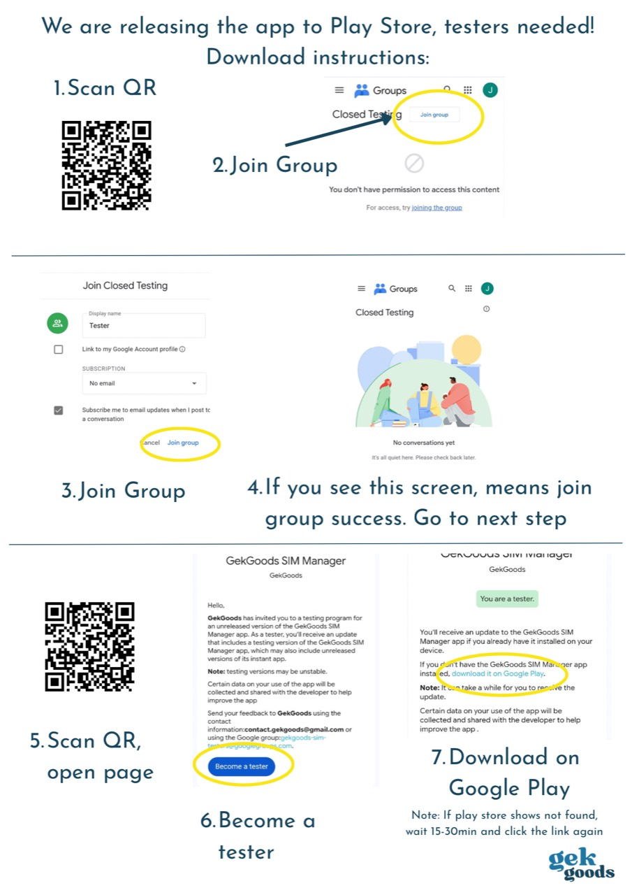

Android phone
Use Android 9 or newer. Different phone models can behave differently, even when they run the same Android version.
We’re inviting testers before the public release. Join the Google Group, become a tester, then install GekGoods SIM Manager from Google Play.
Use the same Google account for the group, the tester invitation, and Google Play.
Important: join the Google Group and become a tester before opening the Play Store link. After you opt in, wait 15–30 minutes for Google Play to update your access. If the app is not found, wait and open the link again.

Before you start: the Google Play version works on Android 9 and newer. Connect your removable adapter after installing and let the app check whether it works.
Use Android 9 or newer. Different phone models can behave differently, even when they run the same Android version.
Use an adapter supported by the app. Some adapter makers need to approve an app before it can use the adapter, so check that GekGoods SIM Manager is supported.
You need internet when adding a plan. Your mobile provider’s service handles the download.
If you use a Samsung phone, turn on the Samsung option in the app settings when the app tells you to. There is only one GekGoods download.
The app’s result is the best first guide for your exact phone and adapter. Android, adapter, or provider updates can change compatibility.